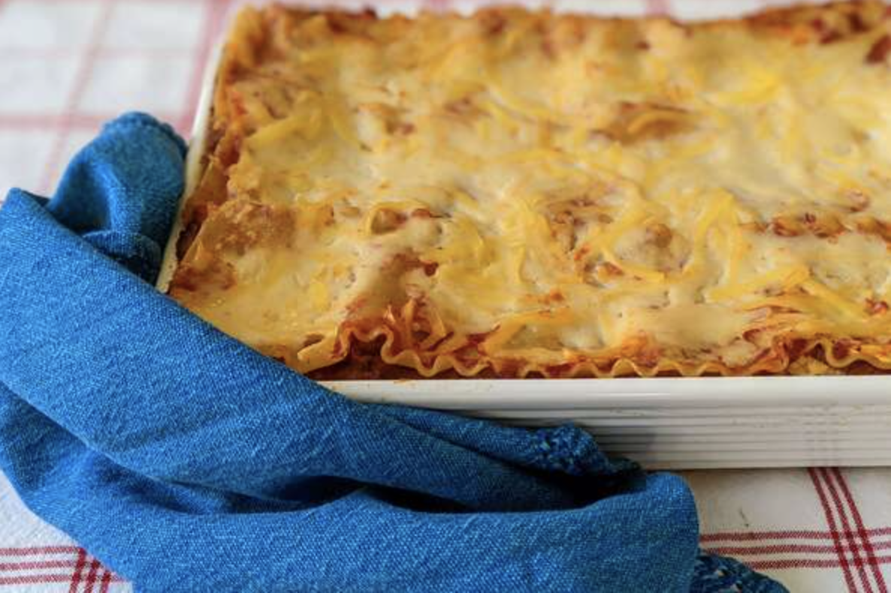

Lasagna

Description
This is my mom's special homemade lasagna recipe with a meaty, made-from-scratch tomato sauce and a deliciously cheesy filling
Ingredients
- Ground meat
- Onion
- Canned tomatoes
- Fresh parsley and garlic
- Sugar
- Dried basil, dried oregano, salt, pepper
- Noodles
- Cottage cheese, shredded mozzarella, Parmesan
- Eggs
Steps
- Cook the meat: Cook the ground meat until browned and crumbly. Add the onion and continue cooking until it's translucent. Stir in the canned tomato products, half of the parsley, garilic, basil, 1.5 teaspoons of salt, oregano, and sugar.
- Boil the lasagna noodles: Boil in lightly salted water until they're al dente.
- Make the cheese layer: Mix the cottage cheese, Parmesan cheese, eggs, the remaining parsley, the remaining salt and pepper in a bowl.
- Assemble the lasagna: Layer the ingredients starting with sauce and ending with mozzarella until the lasagna is assembled.
- Bake the lasagna: Cover with foil and bake in the preheated oven for about half an hour. Remove the foil and continue baking until the top is golden brown.